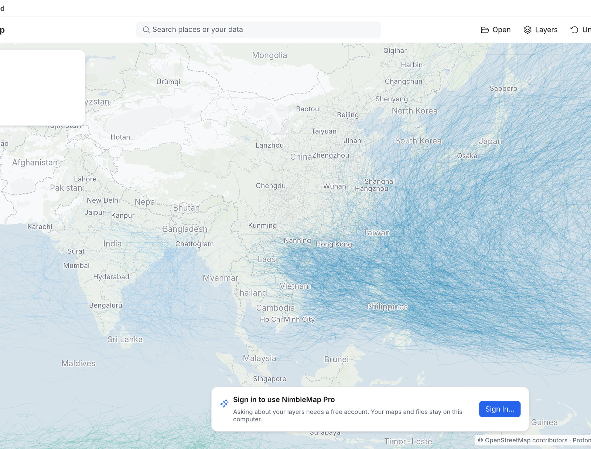
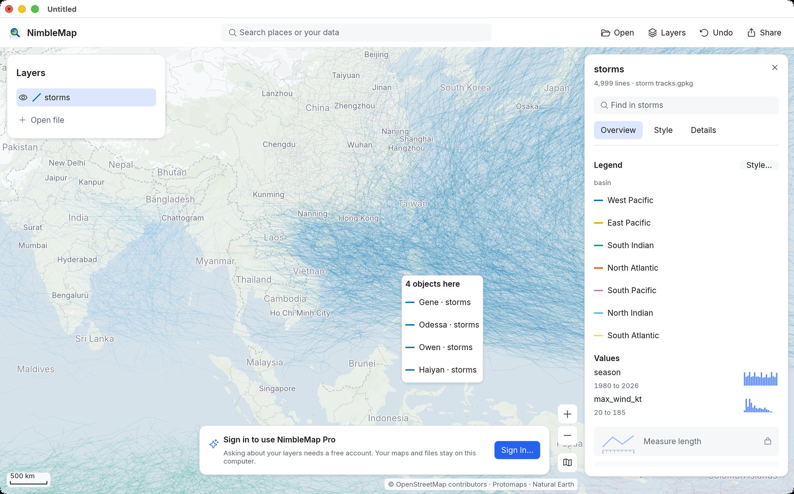
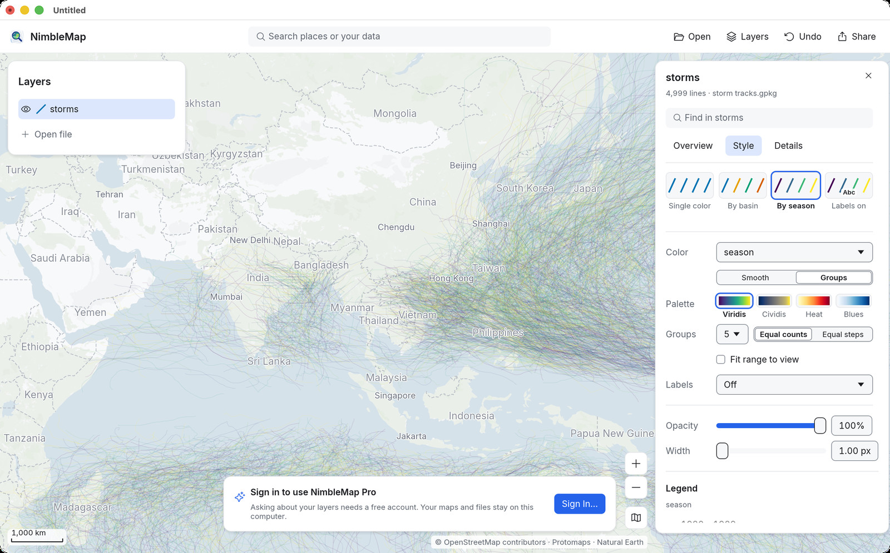
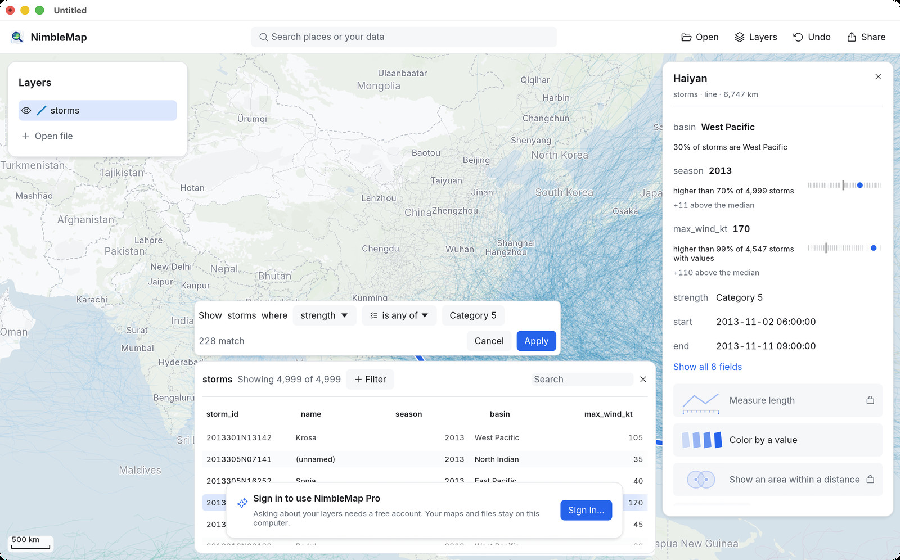
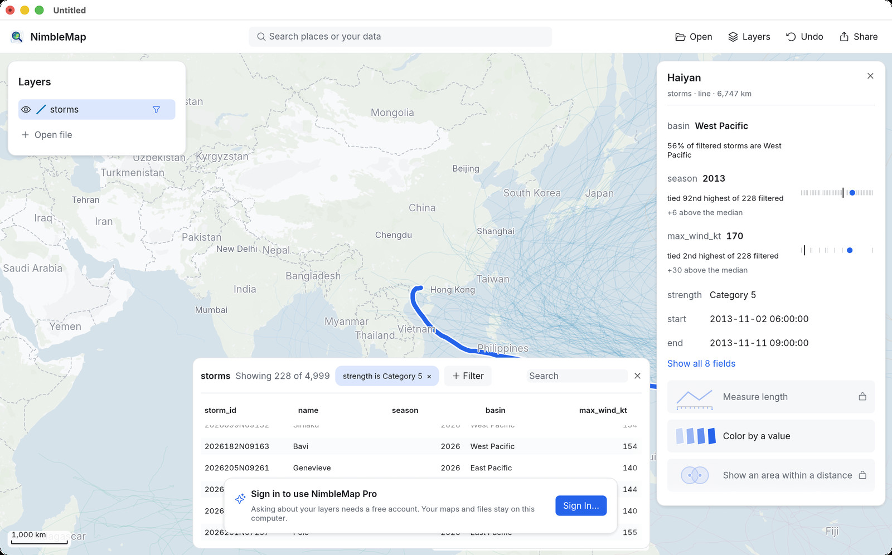
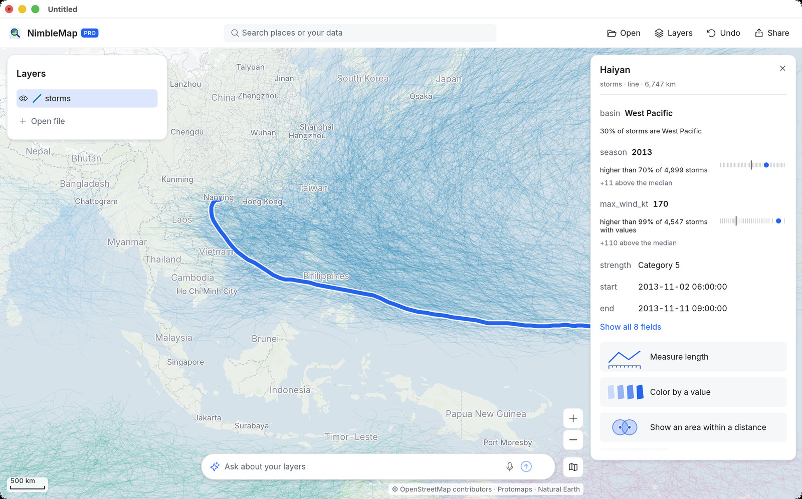

-
예제 열기
새 창 아래쪽의 카드에서 Examples(예제)를 클릭하고 Typhoons and hurricanes(태풍과 허리케인)를 고르세요. (나중에는 언제든 File › Open Example › Typhoons and hurricanes(파일 › 예제 열기 › 태풍과 허리케인)로 열 수 있습니다.)
Layers(레이어) 패널에 storms라는 레이어가 나타나고, 오른쪽 카드에는 4,999 lines · storm tracks.gpkg(선 4,999개 · storm tracks.gpkg)라고 표시됩니다. 폭풍 하나가 선 하나입니다.
-
바다별로 경로 색칠하기
레이어 카드에서 Style(스타일) 탭을 열고 By basin(해역별) 타일을 클릭하세요. 이제 Legend(범례)에 서태평양, 동태평양, 북대서양 등 해역이 나열됩니다.

서태평양(짙은 파란색)은 지구에서 폭풍이 가장 많이 발생하는 해역입니다. 홍콩, 상하이, 대만, 일본에 닿는 태풍은 모두 여기서 시작됩니다. -
폭풍을 클릭해 위치 확인하기
아무 경로나 클릭하세요. 여러 경로가 겹친 곳에서는 4 objects here(이곳에 대상 4개) 같은 작은 목록이 떠서 하나를 고를 수 있습니다. Haiyan · storms를 고르세요.

이제 카드가 태풍 하이옌(2013년)을 설명합니다. 도구를 내밀기 전에 먼저 하이옌이 다른 폭풍과 비교해 어떤지 알려 줍니다. max_wind_kt 170노트는 higher than 99% of 4,547 storms with values(값이 있는 폭풍 4,547개 중 99%보다 높음)입니다. 각 줄 옆의 작은 막대는 이 값이 다른 모든 폭풍 가운데 어디쯤인지 보여 줍니다.

하이옌은 2013년 11월 필리핀 중부를 가로질렀으며, 상륙한 폭풍 가운데 역대 가장 강력한 것 중 하나였습니다. 이름으로 폭풍을 찾고 싶나요? 레이어 카드 위쪽의 Find in storms(storms에서 찾기)나 도구 모음의 검색 상자에 입력하세요. 검색 상자는 일치하는 항목을 Your data(내 데이터) 아래에 보여 줍니다.
-
값에 따라 색칠하기
카드에서 Color by a value(값에 따라 색칠)를 클릭하세요. Style 탭이 열리고, 경로가 데이터의 숫자 하나에 따라 색칠됩니다. 대신 풍속으로 색칠하려면 Color(색상) 메뉴를 열어 max_wind_kt를 고르고, Heat(히트) 팔레트를 써 보세요. Groups(구간)는 값을 몇 개의 등급으로 나누고, Smooth(연속)는 끊김 없는 색 띠를 씁니다.

여기서는 색이 season(연도)을 따릅니다. Color 메뉴에서 다른 어떤 필드로든 바꿀 수 있습니다. -
테이블 열기
카드 아래쪽의 View in table(테이블에서 보기)을 클릭하세요. 지도 아래에서 테이블이 올라옵니다. 폭풍 하나가 행 하나, 속성 하나가 열 하나입니다. 행을 선택하면 지도에서도 그 폭풍이 선택됩니다.
-
5등급 폭풍만 남기기
테이블에서 + Filter(+ 필터)를 클릭하세요. 빈칸을 채우는 문장이 나타납니다. 문장을 Show storms where strength is any of Category 5(strength가 Category 5 중 하나인 storms 표시)로 완성하세요. 적용하기 전에 몇 개가 일치하는지 보여 줍니다: 228 match(228개 일치). Apply(적용)를 클릭하세요.

나머지 경로 4,771개는 삭제되지 않고 숨겨질 뿐입니다. 테이블에는 Showing 228 of 4,999(4,999개 중 228개 표시)라고 나오고, 필터는 ×로 지울 수 있는 칩으로 표시되며, 레이어 행에는 깔때기 아이콘이 붙습니다. 이제 카드는 하이옌을 필터된 폭풍하고만 비교합니다: tied 2nd highest of 228 filtered(필터된 228개 중 공동 2위).

5등급 폭풍은 필리핀 동쪽에 몰려 있다가 대만, 중국 남부, 일본 쪽으로 휘어집니다. 비교해 보려면 조건을 하나 더 추가하거나(예: basin이 West Pacific 중 하나), 칩을 지우고 North Atlantic을 시도해 보세요. 모든 변경은 Undo(실행 취소) 한 번으로 되돌릴 수 있습니다.
-
어느 도시가 가장 자주 폭풍을 맞을까요?
필터를 켠 채로 관심 있는 해안으로 확대하면(검색 상자에 홍콩이나 마닐라 같은 도시를 입력하세요) 어느 곳이 가장 빽빽하게 얽힌 경로 아래에 있는지 볼 수 있습니다. 각 도시 근처를 지나간 폭풍의 수를 세는 일은 새로운 데이터를 만들어 내는 분석입니다. NimbleMap에서는 그것이 Pro의 몫입니다.
NimbleMap Pro. 카드에 Measure length(길이 재기)나 Show an area within a distance of each(각각 일정 거리 이내 영역 표시) 같은 분석 버튼이 추가되고, Ask about your layers(레이어에 대해 질문하기) 상자에 평범한 말로 질문할 수 있습니다. 예를 들어 “Show the area within 100 km of Hong Kong”(홍콩에서 100km 이내 영역을 보여 줘)라고 한 다음 “Keep the part of the storm tracks inside it”(그 안에 있는 폭풍 경로 부분만 남겨 줘)라고 하면 됩니다. 각 답은 작업 기록과 함께 지도에서 미리 보여 주며, Keep(유지)을 클릭하기 전까지는 아무것도 저장되지 않습니다.
NimbleMap Pro: 카드의 분석 버튼과 아래쪽의 질문 상자.
데이터: NOAA NCEI IBTrACS v04r01 (Knapp et al. 2010, doi:10.1175/2009BAMS2755.1; Gahtan et al. 2024, doi:10.25921/82ty-9e16). 배경 지도 © OpenStreetMap 기여자, Protomaps, Natural Earth.